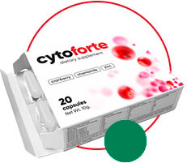

Cystitida je aktuální a běžný problém u žen. Jen v ČR je každoročně registrováno 26-36 tisíc případů tohoto onemocnění. Vzhledem k fyziologické struktuře těla (krátká a široká močová trubice předurčuje k pronikání mikroorganismů), ženy trpí cystitidou až 30krát častěji než muži. Podle statistik trpí každá čtvrtá žena tímto onemocněním během svého života nejméně 6krát a 32% trpí chronickou cystitidou.
ZASE SI NEVÍTE RADY?

cytoforte
Drtivý úder
na cystitidu a její projevy

HLAVNÍ PŘÍZNAKY AKUTNÍ CYSTITIDY
ČASTÉ NUTKÁNÍ NA MOČENÍ
Cystitida je zánětlivý proces v sliznici močového měchýře.
Ve většině
případů má cystitida infekční povahu. Hlavní příčinou cystitidy (až 80%) jsou bakterie E.
coli.
Maligní bakterie vstupují do močového měchýře přes močovou trubici z rezervoárů infekce pod
vaginou (vulvitida a vaginitida různého původu) a střev (v důsledku nedodržování osobní
hygieny, nesprávného mytí).
Vysoká prevalence cystitidy u žen je podporována
zvláštnostmi anatomické struktury urogenitálního systému.
Uretra (močová trubice) žen je kratší a širší, což je důvod, proč se bakterie mnohem snáze
pohybují směrem nahoru.
Klinické příznaky cystitidy u žen jsou jasné, pokud jde o
akutní proces.
Příznaky chronické cystitidy jsou obvykle méně zřejmé - jejich intenzita
je méně výrazná, objevují se a pak zmizí.
V CytoForte NENÍ NIC NADBYTEČNÉHO. Bez antibiotik. Bez umělých složek
-

-
 Brusinkový extrakt
Brusinkový extrakt -
 Extrakt z heřmánku
Extrakt z heřmánku -
 Zinek
Zinek -
 Vitamin E
Vitamin E -
 Vitaminy skupiny B
Vitaminy skupiny B
Brusinkový extrakt: má baktericidní účinek a ničí buněčné patogeny E.coli
Extrakt z heřmánku: podporuje svalovou relaxaci v urogenitálním kanálu, který rychle zmírňuje bolest
Zinek: regeneruje tkáň sliznice poškozenou infekcí
Vitamin E: zabraňuje zánětu v těle a obnovuje urogenitální systém
Vitamíny skupiny B: produkuje protilátky, které inhibují patogeny v těle
Přejděte dolů a zjistěte více
cyto forte OPTIMÁLNÍ SLOŽENÍ S DŮKLADNĚ VYBRANÝMI INGREDIENCEMI
-

1 produkt = 2 účinky
2 v 1 -

Odpuzuje patogenní bakterie
-

Chrání močové cesty
OPATŘENÍ KOMPONENTŮ JSOU PŘEDMĚTNĚ VYRÁBĚNA K VYLEPŠENÍ NEMOCNÝCH PŘÍČIN NEMOCNÝCH NÁRAZŮ INFEKCE, RYCHLÉHO ODSTRANĚNÍ UDRŽITELNÝCH PŘÍZNAKŮ A PREVENCE PŘEDCHOZÍCH CHOROB V DALŠÍCH
Bioaktivní přípravek CytoForte pomáhá od cystitidy
v 8 etapách
- BRÁNÍ BAKTERIÍM V NAPADÁNÍ BUNĚK MOČOVÉHO MĚCHÝŘE 1
- DEFORMUJÍ BAKTERIE 1
- POŠKOZUJÍ BUŇKY BAKTERIÍ A BLOKUJÍ JEJICH SYNTÉZU 1
- BRÁNÍ FORMOVÁNÍ BAKTERIÁLNÍHO POVLAKU 2
- NAPOMÁHAJÍ VYLUČOVÁNÍ BAKTERIÍ Z MOČOVÝCH CEST 1
- MÁ VLIV NA KYSELOST MOČI:
NORMA - KYSELÉ PROSTŘEDÍ (pH = 7) - PODPORUJE BOJ PROTI INFEKCI V MOČOVÝCH CESTÁCH
- ZVYŠUJE ODOLNOST ORGANISMU VŮČI INFEKCÍM. POSILUJE IMUNITNÍ SYSTÉM

Oleg Vysoký
Lékař - urolog, kandidát lékařských věd
Moje doporučení pro pacienty s cystitidou - nenosir těsné a syntetické prádlo,
které je nepříjemné. Druhou možností je, pokud je to možné, lůžkový režim. Za
třetí, ale co je nejdůležitější - užívání doplňku
CytoForte.
V současnosti je tento přípravek na rozdíl od antibiotik jedinou rychle působící látkou, která nemá žádné vedlejší účinky. Po zahájení užívání přípravku CytoForte trvá pouze 17 minut, než zaznamenáte první výsledky. Vysoká účinnost přípravku CytoForte je způsobena komplexem účinných látek, na které si bakterie, původci cystitidy, nedokáží vyvinout rezistenci. Nástroj účinně ničí patogeny v genitourinárním systému a eliminuje nepříjemné symptomy nemoci. V průběhu klinických studií bylo zaznamenáno: měsíční podávání doplňku zajišťuje absenci bakterie E..Coli v 98% případů a zabraňuje opakování onemocnění v budoucnosti. .

BALENÍ cytoforte obsahuje 20 kapslí
-

20 tobolek v jednom balení
20 kapslí
-

1- ráno , 1 - před spaním
2 kapsle denně
-
Doporučené užívání - 30 dnů
3 balení
Vzhledem k tomu, že složky rostlin v kompozici CytoForte nevytvářejí rezistenci bakterií a nepřispívají k jejich rezistenci, lze přípravek užívat po dlouhou dobu (až 1 měsíc) a v případě potřeby opakovat po celý rok.
Jak užívat CytoForte:
-
2 kapsle / den ALESPOŇ 1 MĚSÍCPO TERAPII UTI *
ANTIBIOTIKA -
2 čepice / den NEJMÉNĚ NEŽ 1 MĚSÍCS ČASTÝM RECURRENTEM UTI *
(> 3 SMLOUVY BĚHEM ROKU) -
1 čepice / den NEJMÉNĚ NEŽ 1 MĚSÍCZVÝŠENÉ RIZIKO
ROZVOJ IMC *
SLOŽKY PŘÍPRAVKU PODPORUJÍ POSÍLENÍ PROTI BAKTERIÍM A ZAJISTÍ , ŽE SE AKUTNÍ IMC* NEBUDOU OPAKOVAT
* IMC - INFEKCE MOČOVÝCH CEST
Situace možného použití CytoForte jsou: období po antibakteriální terapii infekcí močových cest, v případě častých opakovaných epizod infekcí močových cest, stejně jako v období zvýšeného rizika jejich vývoje na pozadí nepříznivých faktorů (sezónní změny, horké / vlhké klima, hypotermie, stresové situace) , cestování, nepříznivé hygienické podmínky).
UŽ VĚDÍ, JAK CytoForte FUNGUJE
98% kupujících doporučuje přípravek ke koupi
Hlavní věc při útoku cystitidy je cytoforte a
sexuální odpočinek. Pokud se budete řídit těmito pravidly, můžete se zbavit
vnímavých nepříjemných symptomů za jediný den. Obecně řečeno, nerozumím lidem, kteří
berou antibiotika, když exituje tak úžasný analog na rostlinném základě. A
mimochodem, ohřívací lahve ani nezkoušejte - ty naopak vytvoří příznivé prostředí
pro reprodukci bakterií.
Světlana R. 34 let 
Nikdy bych si nemyslela, že na internetu najdu
alespoň něco užitečného. Když jem zkusila hledat nové metody léčby cystitidy,
objevila jem CytoForte. Nemůžu říct, že najednou, ale prokázal svou účinnost. Už
druhý den zmizely křeče během močení a také nutkání. A ráda bych poznamenala - o půl
roku později nedošlo k žádnému relapsu. I když mi tehdy diagnostikovali chronickou
formu.
Ludmila O. 37 let 
Účinek to má opravdu rychlý! Měla jsem chronickou
pyelonefritidu, kdykoli jme byla trochu nachlazená nebo přepracovaná. Léčila jsem se
tím téměř 4 roky, a to jak pomocí antibiotik, tak i lidovými prostředky. Vyzkoušela
jsem mnoho věcí, žádné zlepšení se neprojevilo. Na radu lékaře jem vykoušela kúru
CytoForte a všechny problémy zmizely. Od té doby se bolest necítila. Každému ho teď
doporučuji.
Irena F. 44 let